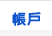

今天學弟在問，要怎麼在自己的 Gmail 信箱中，收取實驗室信箱的 e-mail。我們實驗室的 e-mail 本來是自己架設，不過現在已經轉換到 Google Apps 上去了。而 Google Apps 的帳號其實相當於另一個 Gmail 帳號，除非管理員設定不允許外部 POP3 與 IMAP，否則其實跟一般設定沒什麼兩樣。
設定這個可分為兩個部分：在要被收信的信箱開啟 POP3 功能，以及在要用來收信的信箱(通常是自己的 Gmail 帳號)設定收取 POP3 信件。
第一部分 (在「被收信」的帳戶中設定)
進入 Gmail 設定
點選「轉寄和 POP/IMAP」
點選啟用 POP 功能。至於要收取「所有郵件」或是「現在起所收到的郵件」則是看個人需求。另外，可在這裡設定郵件被收走後，是否要保留？我的習慣是讓他標為已讀，你也可以選擇封存或刪除。
第二部分 (在「用來收信」的帳戶中設定)

在 Gmail 設定中點選「帳戶」
點選「以 POP3 檢查郵件」下面的「新增您的 POP3 郵件帳戶」，會出現下面的視窗
輸入「被收信」的帳戶的 e-mail address，如圖例
系統會自動幫你填上對應的資訊，但是這個資訊是錯的！必須自行修改，可參考這個連結。使用者名稱是你的完整 e-mail address，並輸入你的密碼。POP 伺服器要設定為 pop.gmail.com，port 為 995，並啟用 SSL。我的習慣是會把收來的郵件自動加上一個標籤，這樣可以用標籤區分是哪裡收來的信。
設定到這裡其實已經差不多了。如果除了收信以外，也想利用那個信箱的 address 來寄信的話，可以透過 Gmail 幫你寄就可以，畢竟根本都是同樣的機器XD
補充一個小東西，Gmail Labs (研究室) 裡面有一個有趣的功能，我覺得可以打開。它叫做「重新整理 POP 帳戶」，可以讓你點選首頁的「重新整理」就可以立刻收取外部信箱的信！個人覺得滿實用的 :P
PS. 突然想到一個問題是，如果有開啟 two-step verification 的話，是要….? 我猜應該是要用應用程式密碼吧？沒試過，有經驗的朋友們可以在底下分享一下。:)
Last modified on 2012-04-03